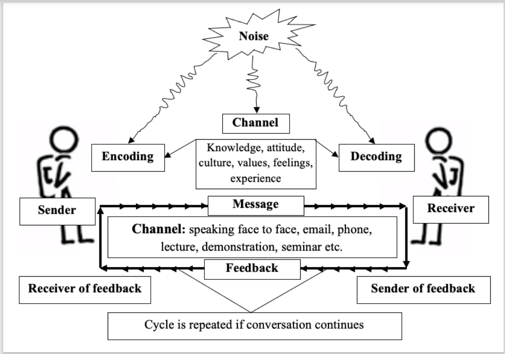
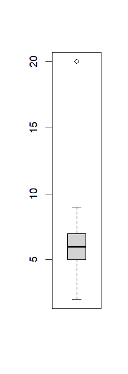

Journalism and Communication
2025-07-18
Outline
- Concept
- Types
- Elements
- Uses
Introduction
Did you know?
- We spend around 70% of our time in some form of communication (listening, speaking, reading, writing). Most researchers agree it’s between 60%–80%, with listening alone taking ~45%.
- Communication and human relations skills are currencies in professional and personal life.
Importance of Communication
Effective communication builds:
- Trust
- Cooperation
- Conflict resolution
- Teamwork and collaboration
Concept of Communication
- Communication is the exchange of messages between a source (sender) and a receiver (audience).
- It is not linear — it’s reciprocal and iterative.
- It involves feed-forward (message sent) and feedback (message received).

Flow of Communication
- Sender initiates message
- Receiver responds with feedback
- Shared understanding is the goal
Communication is complete only when mutual understanding is achieved.
Communication Cycle Example
Feedback makes the process interactive and meaningful.
Communication: An Unusual Example
If someone slaps a boy (Feed-forward), and the boy cries (Feedback), is it communication?
Yes, this is non-verbal communication. Even in negative or chaotic situations, messages are exchanged and feedback occurs.
Chaotic or Silent Communication
Conflict, violence, or silence can also be forms of communication.
Even no feedback is a form of feedback.
Example: A phone rings but no one answers — we assume they are unavailable.
Silence and Feedback
Calling someone who doesn’t respond — we interpret that as absence or disinterest.
A dead person cannot provide feedback — this ends the communication loop.
Types of Communication
Verbal Communication (~30%): - Spoken or written words
Non-verbal Communication (~70%): - Facial expressions - Gestures - Posture - Eye contact - Tone of voice
Models of Communication
Linear Model – One-way transmission (e.g., TV broadcast)
Interactive Model – Sender ↔︎ Receiver with feedback (e.g. News blog)
Transactional Model – Both parties simultaneously sender and receiver (e.g. Interview)
Transactional Communication
Modern communication favors transactional, real-time exchange — especially in interpersonal and professional settings.
Feedback in Communication
Feedback can be: - Intentional (e.g., nodding to show understanding) - Unintentional (e.g., yawning from boredom)
Feedback Examples
- A student raising hand = intentional
- Looking distracted = unintentional
Feedback helps the sender adjust or clarify the message.
Effective Commn
- Source credibility – Trustworthiness, expertise
- Audience characteristics – Age, education, values, needs
- Channel availability – Face-to-face, phone, email
- Feedback mechanism – Immediate or delayed, verbal or non-verbal
- Message treatment – Tailoring the message improves effectiveness.
Message Organization
- Organize your message logically:
- Simple to complex
- General to specific
- Chronological (time-based)
- Topical (theme-based)
Message Appeals
Use persuasive appeals:
- Fear appeal: Warns about negative consequences
- Reward appeal: Shows benefits of action
- Emotional appeal: Connects with feelings like love, guilt, pride
- Rational appeal: Based on logic, facts, reasoning
Channel
Depends on:
Urgency: Quick response? → Phone or face-to-face
Message complexity: Complex info → Written or visual aids
- Audience access: Choose accessible medium
- Formality:
→ Formal = Email or letter
→ Informal = Chat or call
Choose wisely to improve clarity and impact.
Communication & Human Relations
Communication builds human relationships through:
- Persuasion
- Negotiation
- Diplomacy
- Dispute resolution
Empathy in Communication
The key is empathy – seeing from the other’s perspective.
Builds trust and strengthens understanding.
Persuasive Communication
- Empathy: Put yourself in others’ shoes
- Clarity: Use clear, precise language
- Relevance: Match audience interest
- Respect: Be polite and culturally sensitive
Communication for Journalist
Reporters deal with exceptional cases (outliers). They must ensure:
- Accurate communication of facts
- Sensitivity in presentation
- Ethical standards

Reporting and Unusual Events
Usual things don’t make headlines — unusual does!
Reporters must balance drama and truth.
Objectivity & Subjectivity
- Objective: Facts, data, neutrality
- Subjective: Emotions, experience, opinion
- Important vs Urgent: Don’t miss the important ones becuase of many other urgent issues.
Good communication blends all thoughtfully.
Avoid Biases in Communication
- Avoid prejudices and bias
- Don’t rely only on past experience
- Incorporate latest and accurate information
Summary
- Communication is central to human interaction
- It’s a two-way, dynamic, and context-sensitive process
- Mastering communication enhances relationships, influence, and understanding
Thank You!
Any Questions?
Let’s continue the discussion.